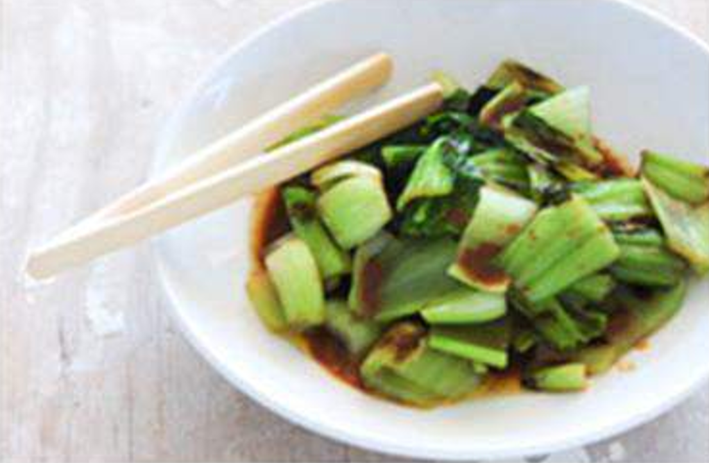
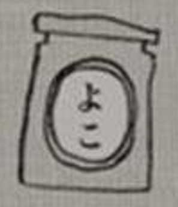
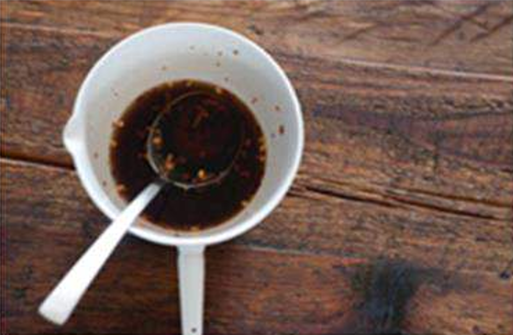

Japanese Vegetarian
Five week course in London
A five week introduction to traditional Japanese vegetarian meals, teaching you a selection of rice and noodle dishes.


A five week introduction to traditional Japanese vegetarian meals, teaching you a selection of rice and noodle dishes.

An intensive one-day course looking at how to create the most delicious sauces for use in a range of Japanese cookery.